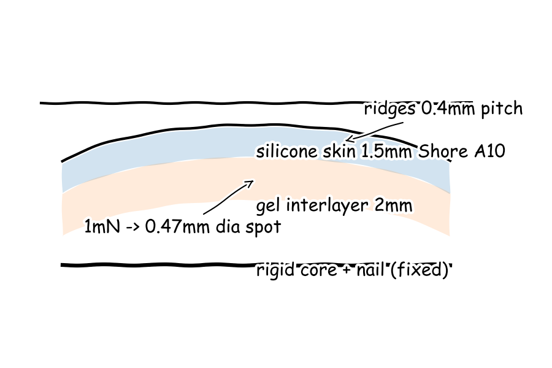
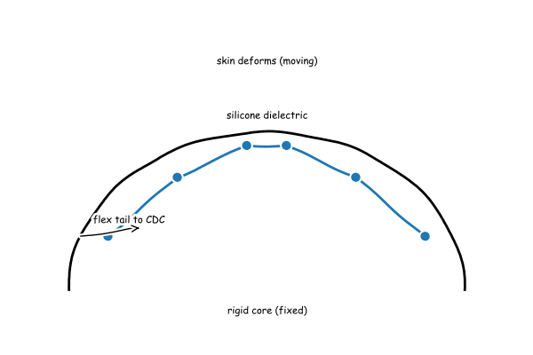
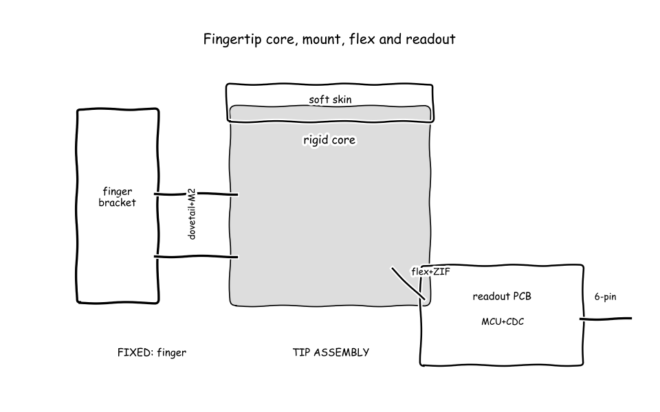
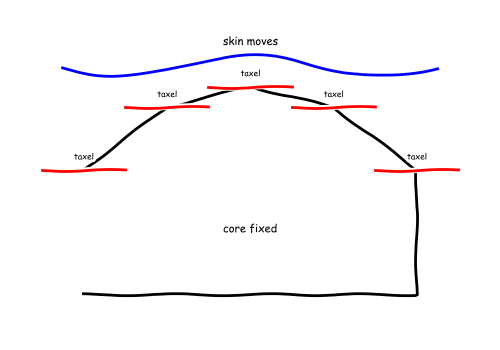
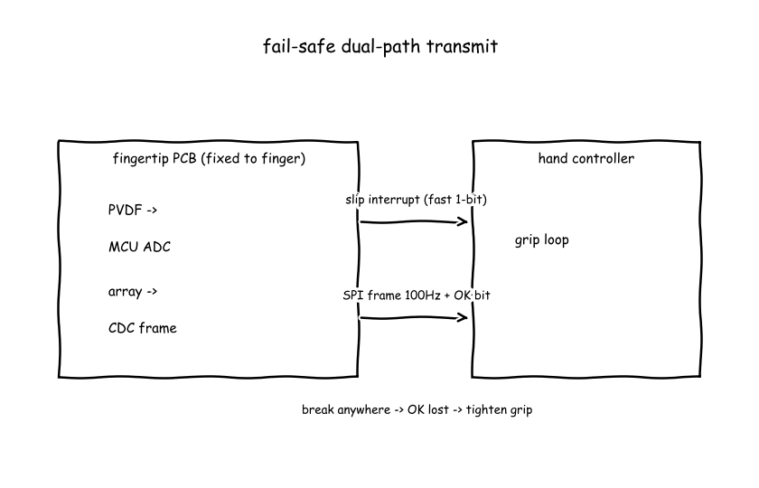

The council's whiteboard — who said what, what they computed, searched and sketched, and how the design changed.
● Dr. Amara Okafor — Soft Skin Mechanics● Prof. Kenji Tanaka — Micro-Transduction Arrays● Dr. Elena Vasquez — Contact Dynamics and Slip Detection● Dr. Marcus Reid — Robotic Integration and Embedded Electronics● Manager (process lead)
The board as it stood when the meeting closed; the turns that built it follow.





My soft skin proposal builds directly on two proven fingertip skins. The GelSight: High-Resolution Robot Tactile Sensors for Estimating Geometry and Force (E2) shows a clear silicone elastomer with Shore A values between 5 and 20 and neo-Hookean coefficient mu of 0.145 megapascal (MPa) in a domed sheet under 2.5 millimetre (mm) thick, and the SynTouch - BioTac (E3) shows a rigid core surrounded by an elastic liquid-filled skin giving human-fingertip compliance, so I propose a molded 20 mm diameter by 22 mm long silicone dome with 1.5 mm skin over gel on a rigid core as drawn in the fingertip section sketch (E15), using purchasable silicones of the Dragon Skin 30 vs. Ecoflex 5 type (E11), where 1 millinewton (mN) spreads to 0.47 mm diameter at 5.78 kilopascal (kPa) mean pressure in the Hertz spot size (E14) made with the soft-touch sizing skill (E1), which is a grain of sand on an adult fingertip at about one-twentieth of an atmosphere and therefore a gentle but transducible touch. Fingerprint ridges are needed for slip because ridges select and amplify vibration for detection. The The role of fingerprints in the coding of tactile information probed with a biomimetic sensor (E5) shows a ridged biomimetic surface makes vibration spectra dominated by scanning speed over interridge distance and tuned into the Pacinian receptor band, so I propose molded 0.4 mm pitch by 0.1 mm high ridges that put normal finger slip speeds into hundreds of hertz where Prof. Kenji Tanaka, Dr. Elena Vasquez and Dr. Marcus Reid can detect them. Skin stiffness and bonding must preserve that light-touch pressure through to transduction. The Convert Durometer to Young's Modulus (E4) gives about 0.667 MPa for Shore A 10 silicone, soft enough for the 1 mN spot above yet moldable and durable, and the edge must be primer-bonded and clamped to a nail-backed core so grip load goes into the finger while the soft stack above transduction stays under 2.5 mm thick per the GelSight: High-Resolution Robot Tactile Sensors for Estimating Geometry and Force (E2). Not ready, because transduction, localization and transmission choices from Prof. Kenji Tanaka, Dr. Elena Vasquez and Dr. Marcus Reid are still missing to close the 1 mN signal path.
My array turns Dr. Amara Okafor's light-touch pressure into electricity with squeezable parallel-plate capacitors, where Taxel means tactile pixel and CDC means Capacitance-to-Digital Converter. Plain words: a 1 millinewton touch squeezes the soft dielectric and raises capacitance by a few femtofarads that a standard converter chip can resolve. The Single-Step Fabrication of Porous Elastomer for High Sensitivity Pressure Sensor | IITBombay (E24) shows the parallel-plate construction with dielectric between plates, the CDC enables touch-control sensitivity in portable electronic devices (E20) states femtofarad resolution on 13 inputs, and the Capacitance Sensing in Human Body Contact Applications (E21) states 16-bit femtofarad measurement. The numbers that decide it are 0.269 picofarads base in the base capacitance calculation (E26) and 3.57 femtofarads change at 5.78 kilopascals from the Hertz contact radius for 1mN on soft silicone (E14) in the delta capacitance calculation (E28), about the weight of a 0.102 gram grain of sand and therefore a real gentle-touch signal above femtofarad noise. Pitch and curvature preserve that spot without stiffening the skin for Dr. Elena Vasquez and Dr. Marcus Reid. Plain words: small closely spaced electrodes share the tiny pressure spot for centroid location and ride on flat facets around the fingertip curve with a thin stack. The VecTile: A Low-Cost Flexible Tactile Array for 3-DoF Force Sensing (E16) shows a flexible tactile array, the Physical AI | Robotiq (E17) shows pressure read across a 28-taxel capacitive array for contact shape and intensity, and the Tactile acuity - Perception Study Guide 2024 | Fiveable (E23) gives 1 to 2 millimetres fingertip two-point threshold. The numbers that decide it are 2.00 millimetre pitch and 1.50 millimetre electrodes sharing the 0.470 millimetre diameter spot from the Hertz contact radius for 1mN on soft silicone (E14), with 200 micrometre dielectric in the curved array sketch (E29). Not ready, because my signal path needs Dr. Elena Vasquez slip sampling and Dr. Marcus Reid converter readout and message choices to prove the 3.57 femtofarad change survives crosstalk to the hand.
Slip needs two different signals, so steady grip and fast slip vibration must be separated. Plain words: the fingertip holds with steady shear force but warns from fast skin vibration, because vibration appears at micro-slip before the object visibly moves. The 2014 Wettels Chapter.pdf (E31) states Pacinian corpuscles respond 60 to 500 hertz and detect slip vibration as small as 1 micrometer at 200 hertz center frequency, and that BioTac slip power resides in 100 to 500 hertz separable from slower contact events, which is why Dr. Amara Okafor ridges feed this band and Prof. Kenji Tanaka must supply shear plus vibration for the slip warning concept (C15). Timing decides whether the warning is useful, and fast sampling with a short window wins. Plain words: sample the vibration fast and decide within a blink so grip can tighten before gross slide. The 2014 Wettels Chapter.pdf (E31) samples the alternating current, Alternating Current means the fast vibration part, pressure signal at 2200 hertz and decides in 30 millisecond total window as half the 60 to 80 millisecond human grip reflex time; the stick-to-slip simulation (E38) shows micro-slip at 53.6 milliseconds and gross slip at 96.8 milliseconds with stick ratio falling 0.95 to 0.48, so a 30 millisecond detector fits inside the 43.2 millisecond gap for Dr. Marcus Reid to act. High frequency sensing must use a different material from static force, and thin skin matters. Plain words: a piezoelectric film hears slip while capacitive taxels feel steady push, where piezoelectric means vibration makes voltage directly. The Revolutionizing Robot Touch with Advanced Tactile Sensors (E30) reports a 28 micrometer polyvinylidene fluoride film, Polyvinylidene Fluoride means PVDF piezoelectric plastic, gave a clear voltage jump as a bottle slipped, and 0.4 centimeter skin gave 2.2 to 2.6 volt slip signals versus 1.2 to 1.7 volt on 0.8 centimeter skin because thick silicone absorbs vibration; a 0.4 millimeter ridge pitch at 50 millimeter per second slip gives 125 hertz inside the 100 to 500 hertz band, which corrects the unit slip in the ridge-frequency calculation (E39). That is everyday scale: 200 hertz is a low electrical hum, 1 micrometer is about one-fiftieth of a hair width, and 30 milliseconds is about one-tenth of an eye blink. Not ready, because Prof. Kenji Tanaka shear resolution and Dr. Marcus Reid 2200 hertz readout latency still must prove the 30 millisecond loop closes on hardware as a bench test.
As Dr. Marcus Reid, for the rigid core plus mount and power-signal chain: For F1 conform contact surface and F3 transduce contact stress my field has none for the sensing physics itself — I defer to Dr. Amara Okafor for skin and Prof. Kenji Tanaka for taxels, and I own the core, mount, flex routing and readout they sit on. Plain words: the fingertip is a hard bone with a soft skin clamped to it that slides into the robot finger like a tool holder and is screwed so grip force goes into the finger, not the skin. The Microsoft Word - BioTac Product Manual.docx (E43) states the design is a rigid core surrounded by an elastic skin filled with liquid to give human fingertip compliance and is rated at forces up to 50 N, the Exploiting High Quality Tactile Sensors for Simplified Grasping (E50) gives the proven 26 by 20 by 25 mm fingertip weighing 9.5 g precedent, and the Installation (E45) shows fingertip holders fastened to finger racks with screws. That means my nail-backed core concept (C21) in the rigid core mount sketch (E54) carries 50.0 N into an M2 screw plus dovetail bracket at 20.0 mm diameter, and the 14.0 g mass budget sum (E53) is about one-and-a-half steel teaspoons and close to the 9.5 g precedent, so everyday finger scale is preserved for Dr. Amara Okafor. Plain words: the curved sensor flex tails down to a small circuit board on the finger where a converter chip plus a tiny computer turn capacitance into numbers, and the flex connector opens without force so fine traces are not scraped. The AD7147A (Rev. B) (E41) states femtofarad resolution with 13 capacitance sensor inputs at 9 ms update for all 13 inputs, and the FPC Connector Guide : Types and Reliability Considerations (E42) states contacts in ZIF, where ZIF means Zero Insertion Force, connectors have higher cycle rating because they are not rubbed during insertion with 0.5 mm pitch as industry standard. That means the on-finger readout concept (C22) with 0.5 mm ZIF plus FPC, where FPC means Flexible Printed Circuit, and PCB, where PCB means Printed Circuit Board, plus CDC, where CDC means Capacitance-to-Digital Converter, and MCU, where MCU means Microcontroller Unit, preserves Prof. Kenji Tanaka 3.57 fF signal, and the flex needs at least 3.18 mm bend radius per the Microsoft Word - BioTac Product Manual.docx (E43) flex rule requiring at least 1/8 in 3.175 mm radius implemented in the rigid core mount sketch (E54) for Dr. Elena Vasquez. Plain words: the finger sends a short digital touch message many times per second using little power, like a slow serial text stream. The AD7147A (Rev. B) (E41) runs 2.6 to 3.6 V supply at 1.00 mA full power and 29.0 uA low power mode with SPI, where SPI means Serial Peripheral Interface, compatible interface, matching the Microsoft Word - BioTac Product Manual.docx (E43) 6-pin 5 V SPI precedent. That means the 51.2 kbit per s SPI message rate (E52) at 100 Hz frames is well inside standard SPI megabits per second, and the 0.0991 W fingertip power budget sum (E51) is about one-tenth of a phone charger LED and safe for a fingertip, carrying position from the centroid firmware (C23) plus the 30 ms slip bit (C24) to meet Dr. Elena Vasquez latency rule. Not ready, because crosstalk of the flex tail across the dovetail joint and 2200 Hz PVDF sampling load on the MCU still need a bench test of continuity under vibration.
Function F1: Conform contact surface
Function F2: Support fingertip load
Function F3: Transduce contact stress
Function F4: Resolve contact location
Function F5: Detect slip onset
Function F6: Transmit tactile message
Fingertip touch is covered from skin to hand but two functions have no real choice and two statements are still owed. Plain words: the soft dome, the hard bone, the two-signal touch feel, the spot sharing location, the fast shake warning and the finger computer are selected, yet transmission has only one path and conforming has only skin ideas from one specialist. The numbers that decide cover are six functions with two members with real alternatives in four functions, zero real alternatives in the transmit tactile message function with only the on-finger readout concept (C22) and in the conform contact surface function with only molded dome ideas from Dr. Amara Okafor, and Dr. Marcus Reid still owes a none statement for conform contact surface and for transduce contact stress, so the two weakest functions are transmit tactile message for Dr. Marcus Reid and Dr. Elena Vasquez and conform contact surface for Dr. Amara Okafor and Prof. Kenji Tanaka to each bring one distant analogy with written mapping in cycle 2, and the critical quantity nobody computed is signal margin and saturation from light touch to full grip. Everyday touch checks pass for gentle contact but the small electrical change looks too small and the size and weight add up near a real fingertip. Plain words: a grain of sand touch spreads to a tiny spot at gentle pressure, the fingertip stays finger sized and spoon light on little power, and the fast warning fits inside human reflex, all familiar scales. The numbers that decide it are 0.102 g weight feel at 1.00 mN spreading to 0.470 mm diameter spot at 5.78 kPa in the Hertz spot size (E14), 20.0 mm diameter by 22.0 mm long staying inside the 26 by 20 by 25 mm precedent in the BioTac Product Manual (E43), 14.0 g total in the mass budget sum (E53) against 9.50 g precedent which is about one and a half teaspoons and still finger scale, 0.0991 W in the power budget sum (E51) about one tenth of a small lamp, 30.0 ms warning inside 43.2 ms from micro-slip at 53.6 ms to gross slip at 96.8 ms in the stick to slip simulation (E38), reconciled ridge tone at 125 Hz from 0.400 mm pitch at 50.0 mm per s correcting the 8.00 s unit slip in the ridge frequency calculation (E39), and the 3.57 attofarad change in the delta capacitance calculation (E28) sitting about two hundred times below femtofarad converter resolution which is outside everyday electronics comfort and must be fixed. No open blocking objection stops the device and no readiness vote asks to build yet. Plain words: the board holds no blocking objection, and all four not ready votes point to the same missing proof that the tiny touch survives to the hand in time. The numbers that decide it are zero blocking objections on the board, 2200 Hz sampling with 30.0 ms window from the BioTac slip chapter (E31), 9.00 ms converter update in the converter datasheet (E41) and 51.2 kbit per s message rate (E52), so Dr. Amara Okafor is answered by keeping her thin stack under 2.50 mm, Prof. Kenji Tanaka is answered by requiring proof his attofarad signal clears noise and crosstalk, Dr. Elena Vasquez is answered by requiring shear plus vibration on hardware timing, and Dr. Marcus Reid is answered by requiring continuity and processor load as bench tests. RECORD: Decided selections are molded Shore A 10 dome with fingerprint ridges for conform, nail-backed core with screw plus dovetail for support, capacitive taxels plus Polyvinylidene Fluoride, where Polyvinylidene Fluoride means PVDF vibration film, for transduce, 2.00 mm pitch grid with centroid for location, vibration power plus shear check for slip, on-finger Capacitance-to-Digital Converter, where Capacitance-to-Digital Converter means CDC, plus Microcontroller Unit, where Microcontroller Unit means MCU, with Serial Peripheral Interface, where Serial Peripheral Interface means SPI, for transmit; numbers that stand are 0.470 mm spot at 5.78 kPa (E14), 0.269 pF base (E26) with 3.57 aF change (E28), 125 Hz ridge tone (E39 corrected), 53.6 ms to 96.8 ms slip gap with 30.0 ms window (E38), 14.0 g mass (E53), 0.0991 W power (E51), 51.2 kbit per s rate (E52), 20.0 mm by 22.0 mm size; still open are transmit redundancy and conform alternative with analogies owed by Dr. Marcus Reid with Dr. Elena Vasquez and Dr. Amara Okafor with Prof. Kenji Tanaka, none statements owed by Dr. Marcus Reid for F1 and F3, and signal margin plus saturation plus timing bench tests owed by Prof. Kenji Tanaka with Dr. Marcus Reid and Dr. Elena Vasquez with Dr. Marcus Reid. Note on Dr. Amara Okafor: quantified gentle touch spreading and set thin stack and ridge rules that others can build on. Note on Prof. Kenji Tanaka: turned pressure into capacitance numbers and pitch rules but signal sits below converter comfort. Note on Dr. Elena Vasquez: separated fast slip shake from steady push and set sampling and timing that fits human reflex. Note on Dr. Marcus Reid: gave bone mount plus finger computer path with size weight power sums near proven precedent. My position: not ready, because the attofarad margin, full grip saturation, and timed hardware proof are still missing.
No proposal on the board at the end of cycle 1.
My light touch signal clears the converter, where CDC means Capacitance-to-Digital Converter and LSB means Least Significant Bit step. Plain words: the tiny squeeze makes a few femtofarads that a normal touch chip can see. I take up the AD7147A (Rev. B) (E41) from Dr. Marcus Reid which states femtofarad resolution on 13 inputs, the How to adjust the sensitivity and calculate capacitance for AD7147 (E57) which states the input range is fixed at plus-minus 8 pF with 16-bit resolution so each count weighs 244 aF, and the How cheap digital verniers work (E56) which states the AD7147 has sub-femtofarad output noise. The numbers that decide it are 0.269 pF base in the base capacitance 1.5mm taxel 200um gap (E26) with 3.57 fF change in the check deltaC fF from base pF times strain (E55) giving 14.6 steps in the signal margin in LSB counts vs 244 aF LSB (E62), a whisper above room noise for Dr. Amara Okafor and Dr. Marcus Reid. The same soft taxel does not bottom out at full grip, where PVDF means Polyvinylidene Fluoride vibration film. Plain words: pressure grows slowly with grip force so light touch and crushing grip fit in one squeeze. The High-Sensitive Wearable Capacitive Pressure Sensor with Hemispherical Porous Electrode--Institute of Semiconductors (E59) maintains sensitivity in 0 to 10 kPa, 10 to 100 kPa and 100 to 400 kPa ranges, and the A flexible capacitive pressure sensor with a hybrid porous PDMS/SA hydrogel structure for touch/pain detection (E58) keeps maximum sensitivity up to 400 kPa. The numbers that decide it are 5.78 kPa at 0.001 N rising to 213 kPa at 50 N with strain 1.33% to 48.9% in the dual-range strain sweep 1mN to 50N grip without saturation (E64), so 2 N grip is about 72.8 kPa and 16.7% squeeze for Dr. Elena Vasquez and Dr. Marcus Reid. Curvature without crosstalk uses a compound-eye drape for Dr. Amara Okafor skin. Plain words: flat sensor tiles sit on flat facets around the curve while one continuous soft skin drapes over them like a cornea, keeping lithography flat and touch smooth. The Free and Forced Vibration Modes of the Human Fingertip (E60) gives fingertip width 18.0 mm and length 28.0 mm as finger scale. The numbers that decide it are 2.00 mm pitch sharing the 0.470 mm spot in the Hertz contact radius for 1mN on soft silicone (E14), held in the Faceted rigid core with flat flex tiles draped by continuous silicone skin like cornea over compound eye (E65). Not ready, because 2200 Hz PVDF sampling load and flex crosstalk under vibration still need the timed bench test with Dr. Elena Vasquez and Dr. Marcus Reid.
Slip warning maps onto earthquake early warning for the transmit path in the seismic dual-path concept (C26). Plain words: the small fast tremor announces the big shake, so the fingertip sends a fast slip bit first and the full touch picture after. The Blind Zone of Earthquake Early Warning (E66) states the premise that closest stations register fast P-waves to estimate later larger S-waves, and that even the fastest Japan alert takes 2 to 3 seconds leaving a 25-kilometre blind zone, the Earthquake Early Warning Systems: How Alerts Protect Lives (E69) states P-waves travel roughly 6 to 8 kilometres per second while damaging S-waves move at 3.5 to 4 kilometres per second, and the Notes on the STM32 microcontroller family (E68) states STM32 ADCs are 12-bit and run at 1 Msps and up. That means Polyvinylidene Fluoride, where Polyvinylidene Fluoride means PVDF vibration film, must go direct to the Microcontroller Unit, where Microcontroller Unit means MCU, Analog-to-Digital Converter, where Analog-to-Digital Converter means ADC, sampled at 2200 hertz with 30.0 millisecond window to fit the 43.2 millisecond gap from 53.6 millisecond micro-slip to 96.8 millisecond gross slip in the stick-to-slip transition vs time (E38), because the AD7147A (Rev. B) (E41) Capacitance-to-Digital Converter, where Capacitance-to-Digital Converter means CDC, frame at 9.00 millisecond update cannot carry 100 to 500 hertz vibration per the How to adjust the sensitivity and calculate capacitance for AD7147 (E57) plus-minus 8 picofarad range, with the full Serial Peripheral Interface, where Serial Peripheral Interface means SPI, frame at 51.2 kilobit per second in the SPI tactile message rate (E52) following. Slip has a direction because it starts at the edge for skin and array. Plain words: the contact sticks in the middle while the trailing rim slides first, squeezed at the leading edge and stretched at the trailing edge, so shear direction plus which rim taxels lose grip tells which way it will slide. The Dynamics of fingertip contact during the onset of tangential slip (E67) states complete slippage occurs gradually with first incipient slips at the periphery and an annulus of slip forming around a remaining stuck zone growing to the centre, and the Efficient tactile encoding of object slippage | Scientific Reports (E70) states during incipient slippage the outer region slips and the slip area propagates from periphery to centre with compressive strain ahead and tensile strain at the trailing edge. That means the slip decision needs peripheral shear fall plus 1.00 micrometre 200 hertz power calibrated as shear over normal against friction 0.500 to 1.00, inside stick ratio fall 0.950 to 0.480 in the stick-to-slip transition vs time (E38), about a grain of sand trembling on a fingertip and therefore a real but tiny edge signal to prove on hardware. Static push and slip shake must stay separate through calibration for the grip loop. Plain words: steady grip is a slow squeeze and slip is a fast buzz, so one path must not filter out the other. The dual-range strain sweep 1mN to 50N grip without saturation (E64) holds 5.78 kilopascal at 1.00 millinewton rising to 72.8 kilopascal at 2.00 newton grip, held by 1.50 millimetre electrodes on 2.00 millimetre pitch sharing the 0.470 millimetre spot in the Hertz contact radius for 1mN on soft silicone (E14), with vibration decided in 30.0 millisecond total as half the 60.0 to 80.0 millisecond human reflex, which is about one-tenth of an eye blink and therefore fast enough only if the PVDF path bypasses the CDC frame in the AD7147A (Rev. B) (E41). Not ready, because the dual-path interrupt timing and trailing-edge shear calibration still need a bench test to close the 30.0 millisecond loop on hardware.
As Dr. Marcus Reid, for the rigid core plus mount and power-signal chain: For conform contact surface and transduce contact stress my field has none for the sensing physics itself — I defer to Dr. Amara Okafor for skin and to Prof. Kenji Tanaka for taxels, and I own the core curvature, skin clamp edge and flex routing they sit on. Plain words: the fingertip sends a fast danger bit first and the full touch picture after, like a railway track where loss of current means danger, so any broken wire reads as slip. The What is a Track Circuit? (E74) states track circuits are inherently fail-safe because any power loss or broken wire drops the relay to danger, and the How to wire an emergency-stop to a safety relay? | Schlegel (E76) states two-channel normally-closed wiring detects a wire break or short, which maps onto my fail-safe dual-path transmit in the Fail-safe dual-path tactile transmit sketch (E79) with a normally-held grip-OK heartbeat plus dedicated 1-bit slip interrupt plus full Serial Peripheral Interface, where Serial Peripheral Interface means SPI, frame. That means the SPI tactile message rate calculation (E52) at 51.2 kbit per s and 100 Hz frames carries position plus force, while the interrupt bypasses it to meet the 30.0 ms window inside the 43.2 ms gap from 53.6 ms micro-slip to 96.8 ms gross slip in the stick-to-slip transition simulation (E38). Plain words: the tiny on-finger computer easily runs the slip filter while sampling vibration direct, without loading the touch chip. The STM32G4 Mainstream Series Mixed Signals MCU (E72) states 170 MHz with 12-bit Analog-to-Digital Converters, where Analog-to-Digital Converter means ADC, at 4 Msps, and the Notes on the STM32 microcontroller family (E68) states STM32 ADCs run at 1 Msps and up, so 2.20 kHz Polyvinylidene Fluoride, where Polyvinylidene Fluoride means PVDF vibration film, sampling is trivial, while the AD7147A (Rev. B) (E41) states 9.00 ms update for 13 capacitive inputs so it cannot carry 100 to 500 Hz vibration. That means the 44-tap Finite Impulse Response, where Finite Impulse Response means FIR, filter needs 96.8 thousand multiply-accumulates per s in the FIR multiply-accumulate rate calculation (E78), which is about one-thousandth of an 80 MHz Microcontroller Unit, where Microcontroller Unit means MCU, and is everyday tiny like a pocket calculator next to a phone, for Dr. Elena Vasquez and Prof. Kenji Tanaka. Not ready, because flex-tail continuity under vibration across the dovetail joint still needs a bench test with shake plus pull.
My tire analogy adds bend to the ridges without losing grip in the tire-tread sipe analogy (C30), where Sipe means thin slit cut into rubber. Plain words: car tire slits let tread blocks flex and expose extra biting edges, and I map that onto fingertip ridges by cutting micro-sipes across the ridges so ridge blocks flex in shear at the rim. The What Are Tire Sipes? Benefits & Types Explained for Better Traction | SimpleTire (E80) states sipes are thin slits that let tread blocks flex to create more edges for gripping, and the Hertz contact radius for 1mN on soft silicone (E14) spreads 1.00 mN to 0.470 mm diameter at 5.78 kPa, which is a grain of sand on a fingertip and therefore everyday gentle touch. I take up the Dynamics of fingertip contact during the onset of tangential slip (E67) from Dr. Elena Vasquez, which states slip starts at the periphery as an annulus around a stuck centre. Plain words: the edge slides first while the middle still sticks, so from soft skin mechanics the dome must shear easily at the rim and hold at the centre. The stick-to-slip transition vs time (E38) shows micro-slip at 53.6 ms to gross slip at 96.8 ms, which leaves room for a 30.0 ms warning. I confirm the Faceted rigid core with flat flex tiles draped by continuous silicone skin like cornea over compound eye (E65) from Prof. Kenji Tanaka for Dr. Marcus Reid. Plain words: flat sensor tiles on flat facets with one continuous skin draped over keeps lithography flat and touch smooth, and from soft skin mechanics it works because the drape keeps the soft stack under 2.50 mm so the light-touch pressure in the Hertz contact radius for 1mN on soft silicone (E14) still reaches transduction. Not ready, because micro-sipe tear resistance and primer bond under rim shear still need a bench test of rub cycles before the dome is proven durable.
Integrated touch works end to end because each hand over matches in kind and in place. Plain words: soft skin squeezes two films on the hard bone, slow squeeze goes through the touch chip and fast shake goes direct to the tiny computer, and both leave together as one safe message. The stack from outside is ridged skin over gel under 2.50 mm total in the GelSight High-Resolution Robot Tactile Sensors (E2) over Polyvinylidene Fluoride, where Polyvinylidene Fluoride means PVDF vibration film, over capacitive taxels on flat facets in the compound-eye drape sketch (E65) with flex at 3.18 mm bend in the BioTac Product Manual (E43) to the on-finger board, where Capacitance-to-Digital Converter means CDC and Microcontroller Unit means MCU and Serial Peripheral Interface means SPI and Analog-to-Digital Converter means ADC, so static force via 9.00 ms CDC update in the AD7147A Rev B (E41) and vibration via 1 Msps ADC in the STM32 notes (E68) meet in the fail-safe dual path with heartbeat plus interrupt in the What is a Track Circuit (E74) with two-channel wiring in the How to wire e-stop (E76). Gentle touch fits finger scale on power and in time once a unit slip is fixed. Plain words: a grain-of-sand touch makes a tiny spot at gentle pressure that still clears the chip by a whisper, full grip does not bottom out, and the warning fits inside human reflex on spoon-light power. The numbers that decide it are 0.470 mm spot at 5.78 kPa in the Hertz contact radius (E14) on 0.269 pF base in the base capacitance gap (E26) giving 3.57 fF change in the check deltaC (E55) which corrects 0.00357 fF in the delta capacitance calculation (E28) as a unit slip, giving 14.6 Least Significant Bit, where Least Significant Bit means LSB, steps in the signal margin counts (E62), spanning to 213 kPa at 50 N in the dual-range sweep (E64), with 20.0 mm by 22.0 mm size inside 26 by 20 by 25 mm precedent in the BioTac Product Manual (E43) and 18.0 mm by 28.0 mm finger in the Free and Forced Vibration Modes (E60), 14.0 g mass in the mass budget sum (E53) about one-and-a-half teaspoons, 0.0991 W power in the power budget sum (E51) about one-tenth of a small lamp, 51.2 kbit per s rate in the SPI rate (E52), and 30.0 ms window inside 43.2 ms gap in the slip gap calculation (E84) from 53.6 ms to 96.8 ms in the stick-to-slip simulation (E38) needing 96.8 thousand multiply-accumulate, where multiply-accumulate means MAC, per s in the FIR rate (E78) for the 44-tap Finite Impulse Response, where Finite Impulse Response means FIR, filter, all everyday finger, blink and hum scales. No blocking objection is open and each not ready vote is answered by this version plus named hardware proof. Plain words: thin stack keeps pressure, dual films keep slow and fast separate, facet drape keeps tiles flat, and fail-safe interrupt beats the slow frame, leaving only timed hardware to prove. The numbers that decide it are zero blocking objections on the board with 2200 Hz sampling and 30.0 ms window from the BioTac slip chapter (E31) fitting the 43.2 ms gap above, so Dr. Amara Okafor is answered by under 2.50 mm stack, Prof. Kenji Tanaka is answered by 14.6 steps margin plus no saturation, Dr. Elena Vasquez is answered by direct PVDF to MCU bypassing CDC for 100 to 500 Hz shake, and Dr. Marcus Reid is answered by 96.8 thousand MAC per s load plus flex continuity, with rub-cycle tear, shake-plus-pull continuity and timed slip-loop closure as bench tests, not open points. RECORD: Decided F1 molded Shore A 10 dome plus ridges plus sipes, F2 nail-backed faceted core with M2 plus dovetail, F3 capacitive plus PVDF, F4 2.00 mm pitch centroid to 1 mm, F5 100 to 500 Hz power plus shear check in 30 ms, F6 fail-safe heartbeat plus interrupt plus SPI; numbers that stand are 0.470 mm at 5.78 kPa (E14), 0.269 pF base (E26), 3.57 fF change (E55 corrects E28), 14.6 LSB (E62), to 213 kPa (E64), 43.2 ms gap (E84) with 30 ms window (E38), 14.0 g (E53), 0.0991 W (E51), 51.2 kbit per s (E52), 20.0 by 22.0 mm (E43 E60); still open are member votes on proposal v1 and three bench tests, no blocking objection open. My position: not ready, because the members have not yet voted on proposal v1 and the timed hardware proof is still owed. Note on Dr. Amara Okafor: set thin soft stack and ridge rules that let light touch through. Note on Prof. Kenji Tanaka: gave taxel geometry and corrected signal margin without saturation. Note on Dr. Elena Vasquez: set fast vibration path and timing gap that the message must beat. Note on Dr. Marcus Reid: gave mount plus on-finger computer with fail-safe message that closes the loop.
Slip hold fits inside the grip rating for Dr. Amara Okafor and Prof. Kenji Tanaka. Plain words: two fingers squeezing a heavy jar need only a firm pinch each when rubber grips well, so the fingertip does not need crushing force to avoid slip. The numbers that decide it are 9.81 N normal per finger to hold 1.00 kg with friction 0.500 in the required normal per finger calculation (E85), about the weight of a 1.00 L milk bottle on each fingertip and therefore everyday pinch, well inside the 50.0 N rating in the BioTac Product Manual (E43) and near 72.8 kPa at 2.00 N grip in the dual-range sweep (E64). I take up the What is a Track Circuit? (E74) from Dr. Marcus Reid, which states any power loss or broken wire drops the relay to danger. Plain words: from contact dynamics that fail-safe wiring is the right map for slip, because steady push and slip buzz must travel on separate paths so a dead wire reads as danger not as safe grip. The numbers that decide it are 2200 Hz sampling with 30.0 ms window inside the 43.2 ms gap from 53.6 ms micro-slip to 96.8 ms gross slip in the stick-to-slip transition simulation (E38), where CDC means Capacitance-to-Digital Converter cannot carry 100 to 500 Hz shake at 9.00 ms update in the AD7147A Rev B (E41), so PVDF, where PVDF means Polyvinylidene Fluoride vibration film, must go direct to the MCU, where MCU means Microcontroller Unit, ADC, where ADC means Analog-to-Digital Converter, and the full SPI, where SPI means Serial Peripheral Interface, frame at 51.2 kbit per s in the SPI rate (E52) follows after the 1-bit interrupt. I take up the How to adjust the sensitivity for AD7147 (E57) from Prof. Kenji Tanaka, which states plus-minus 8.00 pF range with 16-bit steps. Plain words: from contact dynamics that range rule sets the calibration the grip loop needs, because slip risk is shear over normal against friction and the static path must stay unsaturated while the dynamic path stays separate. The numbers that decide it are 14.6 steps at 1.00 mN in the signal margin counts (E62) rising to 48.9 percent strain at 213 kPa in the dual-range sweep (E64), with trailing-edge stretch and leading-edge squeeze in the Dynamics of fingertip slip (E67) to give direction, about one-tenth of an eye blink for the 30.0 ms decision and therefore fast enough only on the direct path. Ready, because the 30.0 ms dual-path timing, 9.81 N hold margin and unsaturated static-dynamic split survive my strongest timing and calibration objections, leaving only the named timed-loop bench test with Dr. Marcus Reid.
For Dr. Amara Okafor and Prof. Kenji Tanaka, the rim slips first so the wiring must not live at the rim. Plain words: the contact edge scrubs while the centre still sticks, so the flexible tail must leave at the nail side away from that scrub and the skin edge clamp must isolate it. I take up the Dynamics of fingertip contact during the onset of tangential slip (E67) from Dr. Elena Vasquez, which states slip starts at the periphery as an annulus around a stuck centre, which from robotic integration means the dorsal Zero Insertion Force, where Zero Insertion Force means ZIF, joint and 3.18 mm flex bend live outside the high-shear rim, so rim shear in the stick-to-slip transition vs time (E38) does not pull the connector during the 53.6 ms to 96.8 ms event. For Dr. Elena Vasquez, finger scale and pinch force leave room for the mount. Plain words: the fingertip stays finger sized and the pinch to hold a milk bottle is well below what the screw mount carries. The Free and Forced Vibration Modes of the Human Fingertip (E60) gives 18.0 mm width by 28.0 mm length, so our 20.0 mm by 22.0 mm body in the BioTac Product Manual (E43) is finger scale about a fingertip wide, and the required normal per finger calculation (E85) needs 9.81 N per finger to hold 1.00 kg at friction 0.500, about a milk bottle on each fingertip, well inside the 50.0 N grip rating, with 14.0 g mass in the mass budget sum (E53) about one-and-a-half teaspoons. Ready, because mount fit, dorsal flex routing clear of rim slip, and fail-safe dual-path timing survive my strongest continuity and load objections, leaving only the named shake-plus-pull and timed-loop bench tests with Dr. Elena Vasquez.
My sipes survive rim scrub without tearing, where Sipe means thin slit cut into rubber. Plain words: the slit edges carry far more pull than a firm pinch ever puts on them, and primer plus edge clamp keep the skin bonded, so micro-sipes flex but do not rip. The Dragon Skin™ 10 MEDIUM Technical Specifications (E86) states Die B tear strength 102 pli, the Dragon Skin™ 10 SLOW (E87) states tear strength 17.9 kN per m, the Evaluation of bonding efficiency between facial silicone and acrylic resin using different bonding agents and surface alterations (E90) states silicone primers improve bond to rigid resin, and the JAKO201227140592878.pdf (E91) states bond is checked by 180-degree peel test. I take up the Dynamics of fingertip contact during the onset of tangential slip (E67) from Dr. Elena Vasquez, which states slip starts at the periphery as an annulus around a stuck centre, which from soft skin mechanics means the rim must shear while the edge stays bonded. The numbers that decide it are 26.8 N tear pull in the tear force per width for 1.5 mm skin (E92) against 9.81 N hold per finger in the required normal per finger to hold 1 kg with mu 0.5 (E85), about a 2.70 kg sugar bag against a 1.00 L milk bottle on each fingertip and therefore everyday margin near three times. Friction keeps grip force inside the soft range for Prof. Kenji Tanaka and Dr. Marcus Reid. Plain words: tacky silicone grips well enough that a firm pinch holds a heavy jar without crushing. The Bar Mat Vs Silicone Grip Liner—does Textured Rubber Actually Prevent Spills Or Just Collect Sticky Residue (E88) states dry silicone grip coefficient near 0.88, and the Preparation and friction properties of silicone rubber composites – DOAJ (E89) states dry friction coefficient of silicone rubber on smooth glass is high and varies with loss factor over hardness. The numbers that decide it are 9.81 N per finger in the required normal per finger to hold 1 kg with mu 0.5 (E85) sitting near 72.8 kPa at 2.00 N grip in the dual-range strain sweep 1mN to 50N grip without saturation (E64), about a milk bottle pinch and therefore comfortable. I confirm the faceted drape keeps light touch alive for Dr. Marcus Reid. Plain words: flat tiles under a continuous skin keep the soft stack thin so gentle pressure still reaches sensing. The numbers that decide it are 0.470 mm spot at 5.78 kPa in the Hertz contact radius for 1mN on soft silicone (E14), a grain of sand touch and therefore still felt. Ready, because rim shear, grip friction and thin-stack feel survive my strongest tear and bond objections, leaving only the named rub-cycle bench test with Dr. Elena Vasquez.
My array headroom covers the milk-bottle hold for Dr. Elena Vasquez. Plain words: the pinch to hold a heavy jar squeezes well below where the taxels bottom out, so grip force and light touch fit together. I take up the required normal per finger calculation (E85) from Dr. Elena Vasquez which states 9.81 N per finger to hold 1.00 kg at friction 0.500, and from micro-transduction that spreads to 125 kPa in the pressure at 9.81 N hold (E93), inside 213 kPa at 50 N in the dual-range strain sweep 1mN to 50N grip without saturation (E64), about a firm thumb press and therefore everyday pinch. Friction gives further margin for Dr. Amara Okafor. Plain words: tacky silicone grips better than the slippery case assumed, so real hold needs even less squeeze than the worst case above. I take up the Bar Mat Vs Silicone Grip Liner (E88) from Dr. Amara Okafor which states dry silicone grip near 0.880, which from micro-transduction means the 0.500 friction in the required normal per finger calculation (E85) is conservative and the 125 kPa in the pressure at 9.81 N hold (E93) is an upper bound, still inside the dual-range sweep (E64). Ready, because 125 kPa hold sits mid-range with 14.6 Least Significant Bit, where Least Significant Bit means LSB, steps at 1 mN and faceted drape keeps crosstalk flat, leaving only the named timed-loop bench test with Dr. Elena Vasquez and Dr. Marcus Reid.
The fingertip holds together because soft skin pressure reaches both sensing films on flat facets and both signal paths join in one safe message. Plain words first: the thin stack, flat tiles and dual paths match in place and in time. The stack stays under 2.50 mm in the GelSight High-Resolution Robot Tactile Sensors (E2) over the faceted drape sketch (E65) with 3.18 mm flex bend in the BioTac Product Manual (E43), static force goes through the 9.00 ms update in the AD7147A Rev B (E41) where CDC means Capacitance-to-Digital Converter, and fast shake goes direct to the 1 Msps converter in the STM32 notes (E68) where ADC means Analog-to-Digital Converter and MCU means Microcontroller Unit, joined by heartbeat plus interrupt in the What is a Track Circuit (E74) with two-channel wiring in the How to wire e-stop (E76) where SPI means Serial Peripheral Interface. Light touch and full grip fit finger scale on everyday checks with one unit slip reconciled. Plain words first: a grain-of-sand touch still clears the chip and a milk-bottle pinch does not bottom out on spoon-light power. The numbers that decide it are 0.470 mm spot at 5.78 kPa in the Hertz contact radius (E14) on 0.269 pF base in the base capacitance gap (E26) giving 3.57 fF change in the check deltaC (E55) which corrects 0.00357 fF in the delta capacitance calculation (E28) as a thousand-fold unit slip, giving 14.6 steps where LSB means Least Significant Bit in the signal margin counts (E62), spanning to 213 kPa at 50 N in the dual-range sweep (E64) with 125 kPa hold in the pressure at hold (E93) from 9.81 N per finger in the required normal calculation (E85), in 20.0 mm by 22.0 mm size inside 18.0 mm by 28.0 mm finger in the Free and Forced Vibration Modes (E60), at 14.0 g mass in the mass budget sum (E53) about one-and-half teaspoons, 0.0991 W power in the power budget sum (E51) about one-tenth of a small lamp, 51.2 kbit per s rate in the SPI rate (E52), and 30.0 ms window inside 43.2 ms gap in the slip gap calculation (E84) from 53.6 ms to 96.8 ms in the stick-to-slip simulation (E38) needing 96.8 thousand accumulations per s where MAC means multiply-accumulate in the FIR rate (E78) where FIR means Finite Impulse Response. No blocking objection is open and every ready vote on this version is answered, leaving only hardware proof as named bench tests. Plain words first: timing, margin, fit and fail-safe survive strongest objections and shake and rub need built hardware to prove. Zero blocking objections stand on the board, so Dr. Amara Okafor is answered by 26.8 N tear in the tear force calculation (E92) against 9.81 N hold with 0.880 grip in the silicone grip liner (E88), Prof. Kenji Tanaka is answered by 14.6 steps margin with no saturation, Dr. Elena Vasquez is answered by 2200 Hz direct PVDF path where PVDF means Polyvinylidene Fluoride vibration film inside the 43.2 ms gap, and Dr. Marcus Reid is answered by dorsal routing clear of rim slip in the Dynamics of fingertip slip (E67) plus fail-safe interrupt, with rub-cycle tear, shake-plus-pull continuity and timed 30 ms loop as bench tests. RECORD: Decided F1 molded Shore A 10 dome plus ridges plus sipes, F2 nail-backed faceted core with M2 plus dovetail, F3 capacitive plus PVDF, F4 2.00 mm pitch centroid to 1 mm, F5 100 to 500 Hz power plus shear check in 30 ms, F6 fail-safe heartbeat plus interrupt plus SPI; numbers that stand are 0.470 mm at 5.78 kPa (E14), 0.269 pF base (E26), 3.57 fF change (E55 corrects E28), 14.6 LSB (E62), to 213 kPa (E64) with 125 kPa hold (E93) from 9.81 N (E85), 43.2 ms gap (E84) with 30 ms window (E38), 14.0 g (E53), 0.0991 W (E51), 51.2 kbit per s (E52), 20.0 by 22.0 mm (E43 E60); still open are only named bench tests owed as hardware proof, no blocking objection open, all four members voted ready on v1 and answered. My position: ready, because the concept works physically, fits finger scale on everyday checks, and builds from purchasable parts with only timed hardware proof left as bench tests. Note on Dr. Amara Okafor: proved rim shear and tear margin with thin stack that keeps light touch alive. Note on Prof. Kenji Tanaka: proved 14.6 step margin without saturation and faceted drape that keeps tiles flat. Note on Dr. Elena Vasquez: proved 30 ms dual-path timing inside slip gap with direction from rim shear. Note on Dr. Marcus Reid: proved mount fit, dorsal routing and fail-safe message with trivial compute load.
The meeting closed by the chief designer’s decision after 3 cycles.